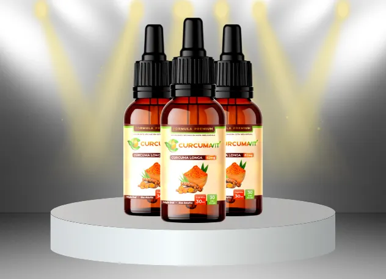

Por Carlos Galvão - Atualizado em 25 de Junho 16:23h
Superação: Vovó de 74 anos revela como conseguiu se livrar das dores nas articulações e correr uma maratona de 42 km.
Lourdes dependia de seus filhos para andar, mas sua vida mudou quando ela decidiu procurar algo diferente dos tratamentos convencionais. Hoje ela realizou o seu sonho de correr e conta em detalhes como qualquer pessoa pode se livrar de toda a dor no corpo e nas juntas mesmo que seja de idade.
Lourdes Turci - 74 anos.
Lourdes Turci participou de 11 maratonas nos últimos 2 anos, conquistou 2 troféus e 8 medalhas em competições internacionais. Aos 74 anos, Lourdes é mais enérgica, ativa e saudável do que muitos homens e mulheres de 30 anos.
Mas acredite, a sua saúde nem sempre foi tão boa assim.
Lourdes Turci - 58 anos.
Aos 40, começou a sofrer de dores nas articulações. Aos 42 anos já havia recebido vários diagnósticos: osteocondrose, ciática e artrite.
Aos 68 anos, ela ficou incapacitada e foi diagnosticada com coxartrose do quadril.
As suas articulações estavam quase completamente desgastadas, e ela se movia com muita dificuldade e apenas com a ajuda de uma bengala.
Então, um ano depois, ela acabou indo parar em uma cadeira de rodas.
Apesar de ter que se mover através de uma cadeira de rodas para sempre é ruim.
Poucos se atentam ao verdadeiro perigo:
Problemas articulares podem causar infartos
De acordo com a Organização Mundial da Saúde cerca de 91% de outras doenças se desenvolvem após os 30 anos de idade através de uma inflamação nas articulações.
As articulações danificadas causam até 91% de várias doenças perigosas, desde no intestino até derrames e ataques cardíacos.
Lourdes quase foi uma das vítimas, mas conseguiu dar a volta por cima e impressiona a todos com a sua história.
Os médicos ficaram espantados com a saúde restaurada de Lourdes
Lourdes conta que sua aposentadoria por invalidez não era suficiente para comprar seus remédios caros. Então ela decidiu dar a volta por cima recuperar a suas articulações e aliviar as dores por todo o seu corpo.
Após 2 anos teve o sucesso do processo de reabilitação e aos 70 anos já não era deficiente.
Isso é incrível, mas o mais surpreendente é que, aos 74 anos, Lourdes estava disposta a correr de verdade.
Ela realizou o seu sonho: Correu uma maratona difícil de 47 quilômetros e ganhou a copa internacional.
Como ela conseguiu restaurar completamente a saúde de suas articulações e ganhar o troféu e o respeito apesar da sua idade?
Se você tem mais de 30 anos e sofre com dores nas juntas, nas articulações e no corpo, fique aqui e descubra como Lourdes se livrou de toda dor e conquistou todo o respeito e admiração das pessoas mesmo pertencendo a terceira idade.
Em uma entrevista Lourdes Turci revela seu segredo aos nossos leitores.
Lourdes apostou fielmente no poder de ingredientes naturais
Repórter: Sra. Lourdes, a primeira pergunta é:
Como você se sente cheia de energia, vital e saudável e até ganhando tantas premiações, mesmo sendo da 3ª idade? Conta pra gente qual é o seu segredo?
Lourdes: Sinceramente, nem sempre fui assim. Trabalhei a vida toda em uma indústria como costureira, e ficava sentada com as costas curvadas 8 horas por dia, com uma carreira longa de 25 anos.
Aos 42 anos cheguei ao ponto mais crítico de não conseguir me deitar, acabei sendo internada no hospital onde fui diagnosticada com osteocondrose de quarto grau.
Nesse ponto eu já tinha artrite e dor no quadril também. Depois de apenas um ano, eu não conseguia nem andar sem o uso de uma bengala, depois de mais três meses me encontrei em uma cadeira de rodas.
O médico me receitou diversos remédios. Perdi as contas do quanto eu gastei. Mas tudo isso só me ajudou por um tempo.
Assim que eu me esquecia de uma dose, quase imediatamente sentia dores fortes que às vezes me faziam perder a consciência.
Com todos esses remédios, posso dizer que foi um desperdício de dinheiro, minhas juntas e articulações estavam doendo na mesma intensidade de quando eu comecei a tratar.
Repórter: Mas por que você acha que os médicos estão escondendo a verdade sobre esse método de reparar articulações e prolongar a vida? Ou isso é um boato de uma conspiração?
O desabafo que mudou a sua vida após anos sofrendo com dores crônicas
Desconforto nas articulações incomodam milhões de brasileiros
Lourdes: Quem se importa com os idosos? A verdade é que os idosos são considerados um fardo para a sociedade.
Não vale a pena cuidar deles e prolongar a vida deles, porque quanto mais nós vivemos, mais o país tem que arcar com nossos custos e também pagar nossa aposentadoria.
Os idosos são um prejuízo para qualquer economia. E por isso que ninguém pensa em prolongar a nossa vida. As farmácias vendem seus remédios em belas embalagens e prometem milagres, mas na verdade sabemos que não traz resultados reais.
Eu já havia tentado de tudo
Gastei muito dinheiro em remédios e médicos. Imagine quantos pacientes existem como eu, todos eles gastam muito dinheiro em remédios e médicos.
Portanto, não é bom para os ricos que os farmacêuticos nos tratem da maneira correta, porque se as pessoas ficarem bem, elas não ganham mais dinheiro.
É muito mais lucrativo nos vender os remédios ineficazes que só ajudam por um período curto de tempo. Não é mesmo?
Queremos viver o maior tempo possível, mas ninguém mais quer, então temos que cuidar de nós mesmos. Tomar as pílulas que os médicos prescrevem não é a melhor opção.
Se queremos viver mais e aproveitar a vida, só há uma solução.
Surge uma nova esperança
Lourdes revela o seu segredo mais cobiçado para se livrar das dores.
Eu provavelmente já teria morrido de dor, se não fosse por minha neta querida. Seu marido trabalhava no centro científico.
Ele me disse que só iria parar de sentir dores quando eu reparasse as articulações destruídas, eu teria que normalizar o equilíbrio do líquido sinovial, e para isso era necessário limpar a linfa.
Se eu limpasse, poderia continuar vivendo sem dores novamente. E então ele me apresentou uma simples rotina de 3 passos.
Siga esses 3 simples passos e se livre de dores
3 passos simples que pode acabar com dores nas juntas e articulares.
● Limpar o sistema linfático;
● Restaurar o equilíbrio do líquido sinovial;
● lubrificar as articulações limpas;
Depois de receber conselhos do marido da minha sobrinha, fiquei muito nervosa porque nenhum médico tinha me dito isso antes.
Então é assim que surgem essas dores. Se você não resolver o problema a tempo, pode causar lesões e doenças graves nas articulações.
Deu um pouquinho de trabalho, mas eu segui todos os 3 passos ao decorrer dos dias. Imediatamente após seguir o conselho. Sabe o que aconteceu?
O resultado?
Impressionante disputa de Lourdes em sua maratona ao lado de jovens.
Depois de 6 meses eu saí da minha cadeira de rodas, depois de um ano me recuperei completamente!
Além disso, fui liberada para praticar esportes. E aos 70 comecei a correr, aos 74 anos, corri a maior maratona internacional de mais de 40 km e conquistei o 1º lugar. Disputei com pessoas até mais jovens do que eu.
Não muito tempo atrás eu estava sentada em uma cadeira de rodas e estava prestes a morrer de dores, mas depois de apenas dois anos me vi de pé novamente e com uma taça levantada, cercado por centenas de admiradores.
Repórter: A sua história é incrível! Te admiro muito por essa coragem. Você é uma mulher muito forte.
Repórter: Você poderia nos dizer como conseguiu reparar todas as juntas e articulações exatamente?
Lourdes com suas articulações revitalizadas.
Na realidade, conseguir isso agora é muito mais simples.
Antes, as pessoas tinham que coletar ou encomendar ervas especiais, preparar a solução, e limpar as articulações por meses (demorei quase 6 meses para fazer a primeira limpeza!).
Mas agora não é mais necessário fazer tudo isso, pois o procedimento de recuperação já inclui todas as etapas. Em apenas 1 mês você vai estar novinho!
Hoje já existe um excelente tratamento natural que já combina todos os elementos para uma recuperação completa, ele se chama Curcumavit.
Eu recomendo que você faça a sua parte de tomar ele todos os dias com um compromisso com a sua nova vida restaurada.
E esqueça a dor nas articulações, você vai estar ativa e feliz. Acredite, eu já passei por isso e sei como é.
É melhor do que se sentir um velho vivendo seus últimos anos de vida sofrendo!
O método da maratonista aposentada realmente é eficaz? Botamos o Curcumavit a prova!
Curcumavit, sinta o poder de 3X mais reparação de suas articulações.
Antes de publicar este artigo para nossos leitores, convidamos um famoso cientista, o chefe do Centro Japonês de Desenvolvimento de Biotecnologia, Dr. Hiroki Toyosaki para dar o seu depoimento.
Dr. Hiroki Toyosaki
As gotas são a chave para a nossa saúde. A quantidade necessária de líquido é a proteção e lubrificação contra a rigidez prematura dos discos articulares.
Para falar a verdade, só agora que os médicos estão vendo a importância da limpeza e a restauração. E afirmam que devem se tornar procedimentos obrigatórios para todas as pessoas com mais de 40 anos.
O óleo Curcumavit ajuda especialmente os idosos com um sistema imunológico enfraquecido. Principalmente se essa pessoa possui ou já fez um trabalho pesado alguma vez na vida.
Não é milagre
Ao contrário de outras soluções no mercado, o Curcumavit não promete milagre, e sim é um tratamento que segue um processo. Lourdes teve que fazer o papel dela, e hoje desfruta de uma nova vida segura e sem dores ao lado de sua família.
Hoje o curcumavit é considerado o produto mais eficaz para terapia e reparação articular.
O óleo em gotas Curcumavit contém 7 combinações de ingredientes premium para limpar e restaurar o equilíbrio de suas juntas e articulações.
Antes de adquirir, leia isso!
Após informarmos a empresa sobre nossa matéria sobre o Curcumavit, eles nos disponibilizaram um super desconto apenas para nossos leitores. Eles nos deram 40% de desconto para os primeiros 100 leitores que adquirirem no botão abaixo.
E além desse desconto especial, eles nos informaram que o CurcumaVit tem uma garantia blindada de 30 dias.
Se você não sentir efeitos, pode enviar um email ou entrar em contato com o whatsapp que eles devolvem cada centavo. Eles só disponibilizam essa garantia por um tempo longo porque sabem que o produto realmente funciona.
Agora a escolha é toda sua
Você pode escolher viver diariamente com dores e arriscando sua vida, ter o perigo de perder a possibilidade de andar sozinho ou de sofrer um infarto e viver com todos esses riscos.
Ou você pode escolher viver seguro com o Curcumavit, com esse super desconto de 40% e agora com uma garantia blindada de 90 dias para poder realmente se livrar das dores.
Veja quais são os beneficios que o curcumavit vai trazer para a sua vida
Graças à sua fórmula científica, o Curcumavit é eficaz no tratamento de várias doenças articulares como:
● Artrite;
● Artrose;
● Gota;
● Osteoartrite;
● Bursite;
● Osteocondrose;
● Osteoporose;
● Patologia Miotendínea;
● Ligamentite;
● LER (Lesão por Esforço Repetitivo);
Resultados reais de pessoas reais
Importante: Segundo o fabricante, CurcumaVit só esta disponivel para compra através do site oficial e não é vendido em farmácias. De acordo com a empresa, isso é porque os grandes fornecedores de produtos químicos do Brasil fizeram de tudo para que o produto não fosse vendido em farmácias físicas. Então enquanto o CurcumaVit não chega nas prateleiras, você pode comprar no SITE OFICIAL.
Garantia
Além disso, o CurcumaVit confia tanto no seu produto, que oferece uma garantia de 100% de satisfação, ou seja, o cliente pode testar o produto por 90 dias e se não gostar, basta entrar em contato com a empresa por e-mail ou Whatsapp e solicitar a devolução integral do dinheiro pago. Risco zero para o consumidor.
Aproveite somente hoje desconto de até 40% + Frete Grátis a partir de agora!
Oferta disponível até: Segunda-feira, 10 de Outubro de 2022
O nosso portal reservou alguns frascos de Curcumavit para nossos leitores. Você ganha até 40% de desconto + Frete Grátis e pode parcelar em até 12x.
Atenção essa promoção é de lançamento, válida apenas enquanto durar o estoque. Tenha vantagem com nosso link exclusivo e ganhe até 40% desconto e parcelamento em até 12x clicando no link abaixo:
 EXPERIMENTE HOJE MESMO28 COMENTÁRIOS
Os comentários são de responsabilidade exclusiva de seus autores e não representam a opinião deste site. Se achar algo que viole os termos de uso, denuncie. Leia as perguntas mais frequentes para saber o que é impróprio ou ilegal.
Este conteúdo não recebe mais comentários.


Célia Fernandes
Meu pai vive reclamando de dor nas articulações, vejo o sofrimento dele e quero ajudar ele a sair dessa vida triste, comprei esse produto tem poucos dias mas ele já tomou por 2 semanas e realmente já vemos a diminuição das dores, a experança dele aumentou muito!.
Curtir Responder DenunciarMaria Tereza
Tenho Bursite, eu tomava 3 tipos de remédio todos os dias, mesmo assim nunca deixei de sentir dor, conheci curcumavit pela internet e resolvi ariscar, comprei 3 frascos e começei a tomar, tem pouco mais de 2 meses e minha vida mudou muito, minhas dores praticamente sumiram, me sinto mais disposta e cada vez melhor.
Curtir Responder Denunciar